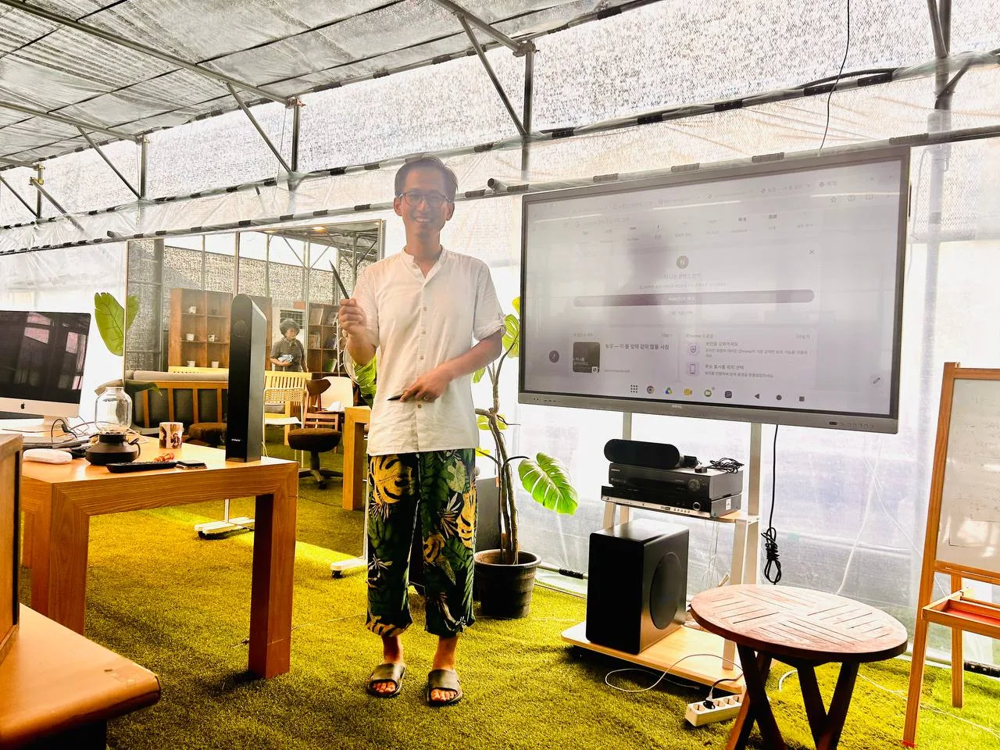
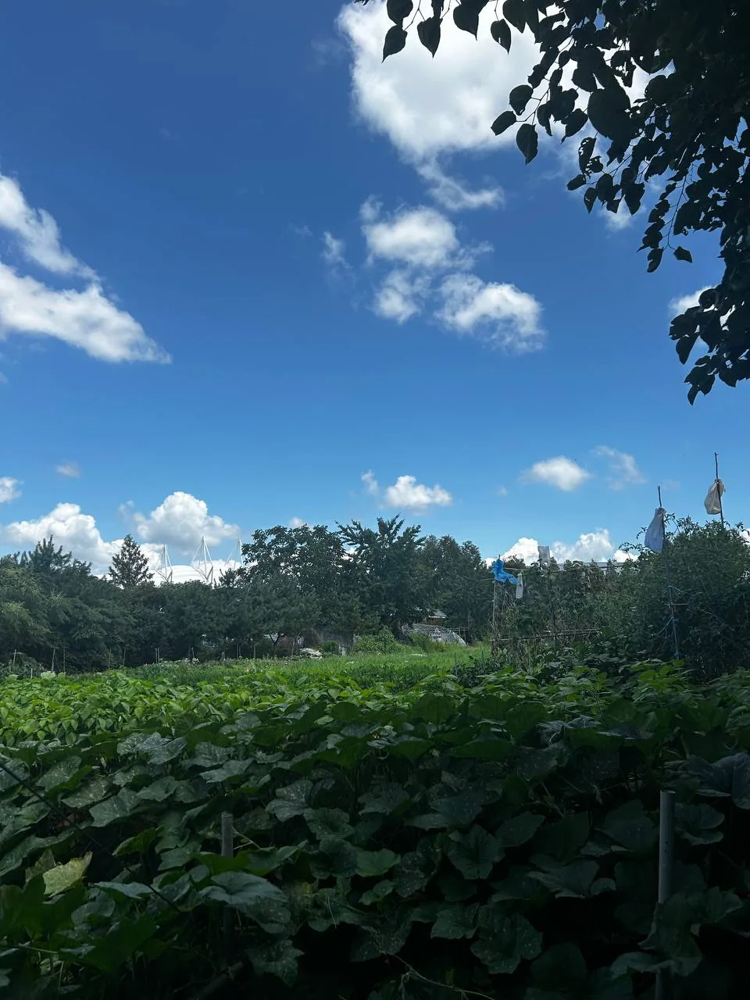
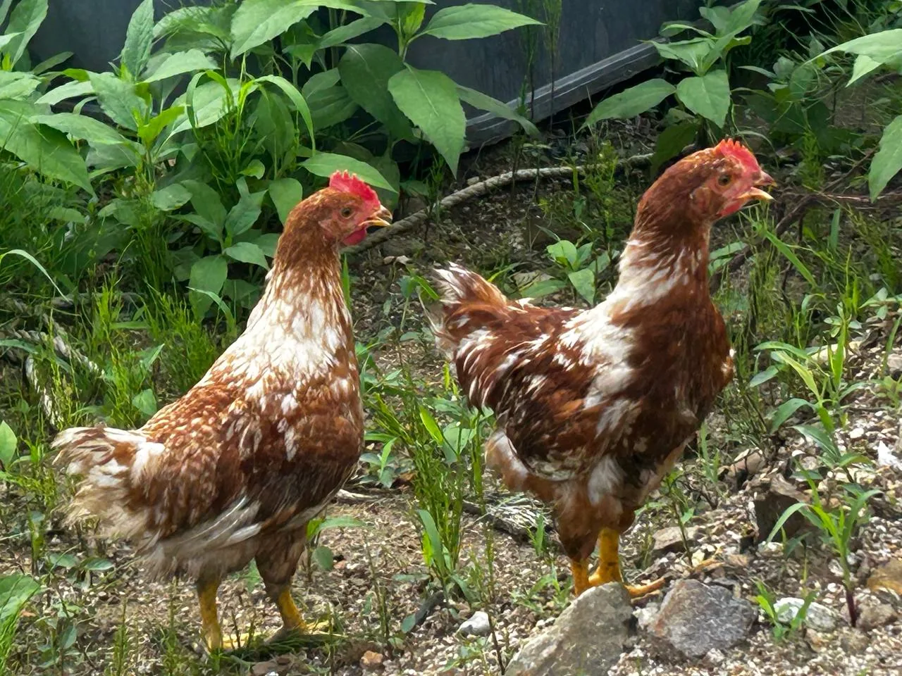
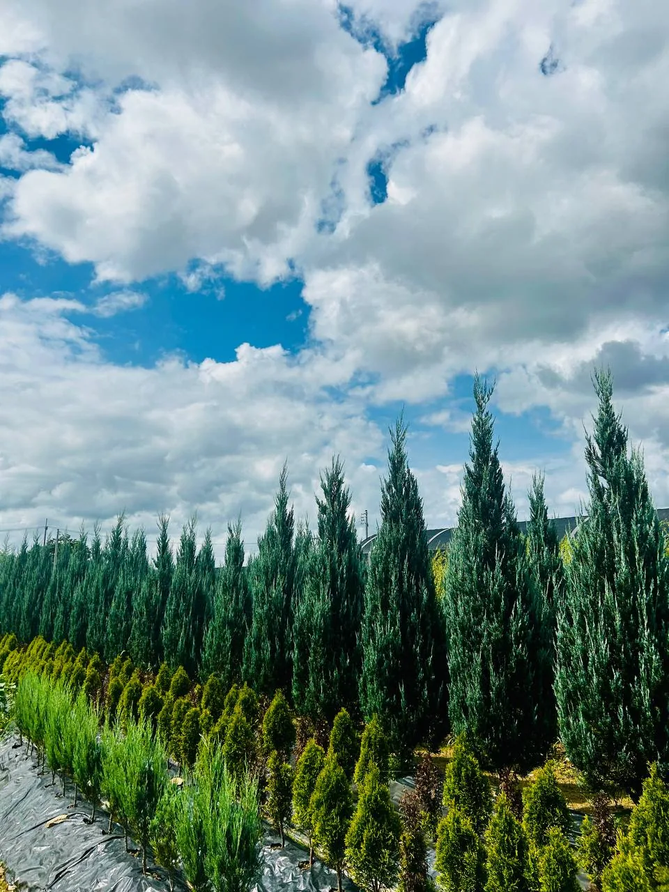
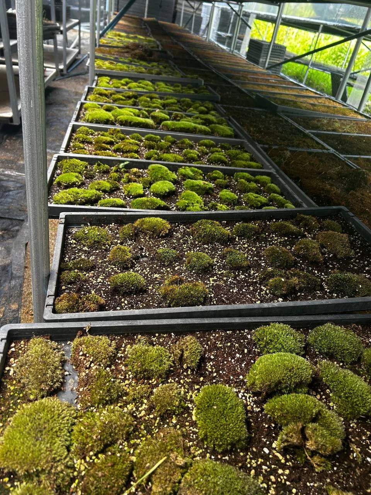
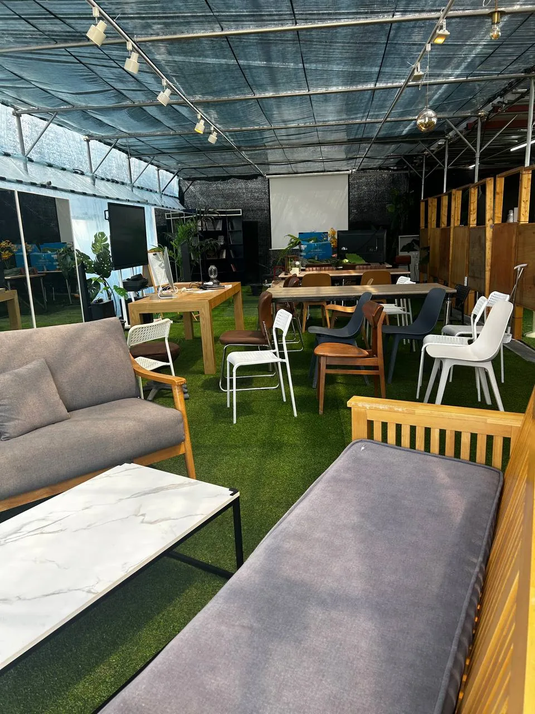
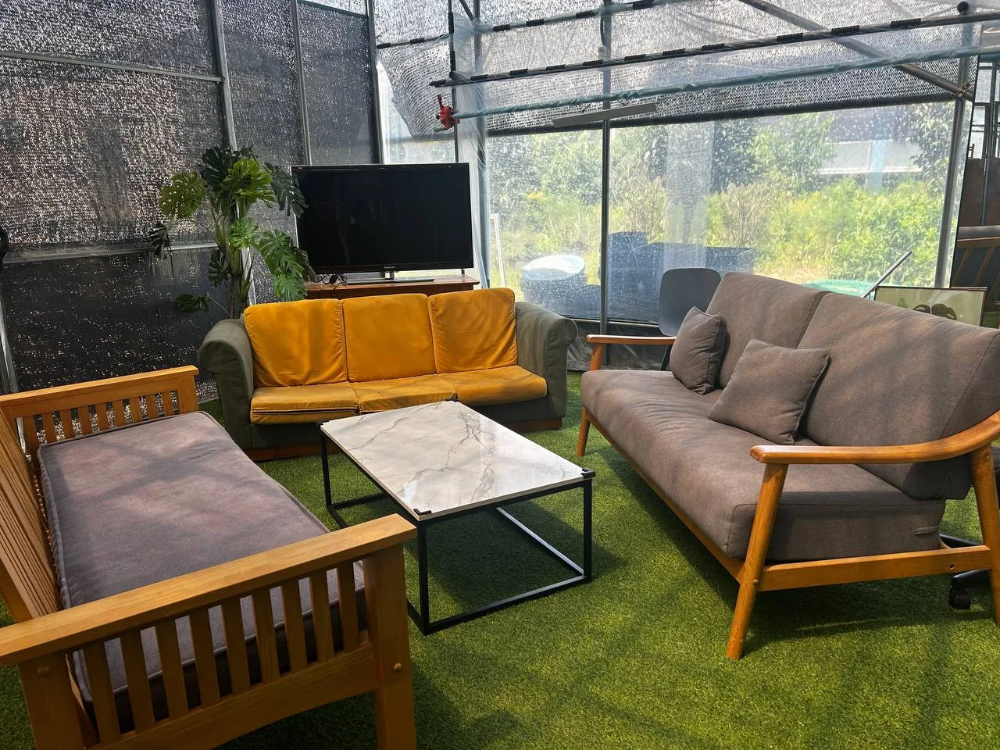
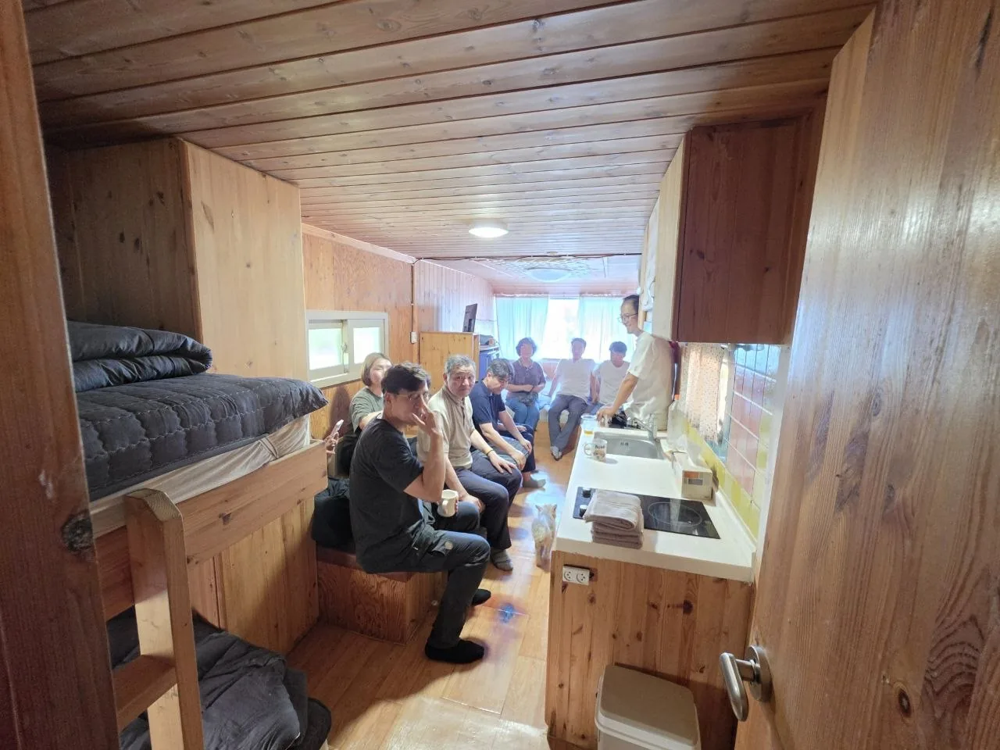
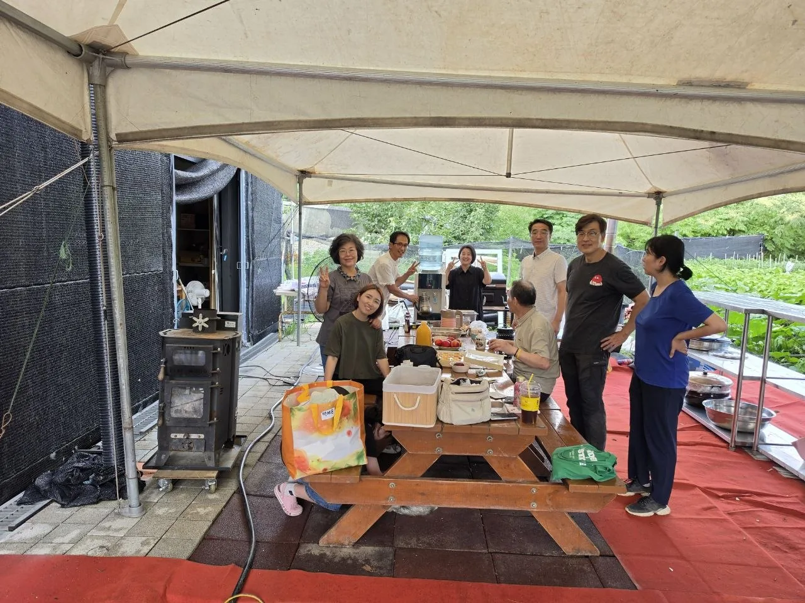

실내 교육장 · 라운지
약 30평의 실내 공간. 함께 배우는 수업, 소규모 워크숍과 대화 모임을 구성합니다. 테이블·의자와 화면이 있는 교육 공간, 편히 앉는 라운지가 이어집니다.
맨땅에서 집을 짓고, 난로를 만들며.
게임처럼 한 단계씩, 스스로 살아갈 힘을 키웁니다.
경기도 고양시 일산서구 대화동 1667-4
공간·시설 · 교통망 · 생활체육 · 병원·경찰서 · 공원·주차

조금 불편해도 내 손으로 해결해보는 경험.
하우스와 난로를 하나씩 만들고, 생활을 돌보며, 함께 머물 아지트를 완성해갑니다.
더 자유롭게 살기 위해,
내 손으로 할 수 있는 일을 늘립니다.
히피처럼 자유롭게, 자연 가까이에서. 직접 만들고 고치고 돌보는 과정에서 자립하는 힘과 생존력을 키웁니다. 서로의 솜씨를 나누며 함께 살아가는 감각도 익힙니다.
프로그램에서 함께 만들어갈 활동
땅을 살피고, 머물 자리를 고르고, 필요한 공간을 그려봅니다. 내 생활에 꼭 필요한 것이 무엇인지부터 찾아가는 첫 미션.
비바람을 피하고 몸을 누일 작은 집. 재료와 도구를 익히고 직접 손을 움직이며, 우리에게 필요한 하우스를 만들어갑니다.
따뜻함을 스스로 마련하는 미션. 난로의 구조와 재료를 알아보고 만들면서, 불을 다루고 돌보는 생활 기술을 배웁니다.
만드는 일을 마치면 불 곁에 둘러앉습니다. 불을 살피고, 이야기하고, 가만히 바라보며 우리 아지트의 시간을 보냅니다.
동물의 움직임을 따라가고 먹이와 물을 챙깁니다. 닭·오리와 어울리는 일도, 매일의 작은 돌봄도 아지트 생활의 일부입니다.
땅에서 만든 집을 넘어 나무 위의 자리까지. 나무에 오르고 다른 높이에서 농장을 바라보며, 우리만의 쉼을 찾아갑니다.

집과 난로, 불과 동물, 나무와 쉼. 하나의 미션을 마칠 때마다 우리 아지트에 생활의 한 조각이 더해집니다. 직접 만든 공간에서 지내며 다음에 필요한 것을 찾아갑니다.
오로빌의 생태공동체처럼, 함께 일하고 일상을 돌보며 배우는 삶에서 영감을 얻습니다. 참고: 사다나 포레스트의 공동체 활동 ↗
아지트 만들기 참여 상담 ↗활동별 진행 여부·일정·제작 범위는 참여 상담에서 안내합니다. 하우스·난로 제작과 나무 오르기는 진행자와 함께 정한 작업 범위 및 현장 조건에 따라 구성합니다.
실제 놀일의 공간 사진입니다. 모임의 인원과 활동에 맞춰 교육, 대화, 농장 활동을 연결할 수 있습니다.
나무를 기르고, 이끼를 돌보고, 함께 머무는 공간.
사진을 누르면 원래 구도를 크게 볼 수 있습니다.



놀일 보관 사진입니다. 계절과 재배·공간 배치에 따라 방문 시 풍경은 달라질 수 있습니다.

약 30평의 실내 공간. 함께 배우는 수업, 소규모 워크숍과 대화 모임을 구성합니다. 테이블·의자와 화면이 있는 교육 공간, 편히 앉는 라운지가 이어집니다.
계절의 작물을 살피고 함께 농사짓는 공간. 날씨와 작물 상태에 맞춰 활동을 정합니다.

소파와 테이블에 둘러앉아 쉬거나 모임의 이야기를 이어가는 자리입니다.

작은 모임과 휴식을 위한 별도 공간. 숙박을 포함한 이용은 일정과 인원을 사전 협의합니다.

모임에 맞춰 야외 식사와 바비큐를 계획할 수 있습니다. 식재료와 장비 사용은 예약 때 정합니다.
농장 내 화장실과 싱크대가 있는 주방 공간이 있습니다. 취사 범위와 준비물은 모임에 맞춰 안내합니다.
기존 공간 안내 기준 카라반 최대 6명, 농막 최대 5명. 실제 사용 공간과 숙박 인원은 예약 시 확정합니다.
실내 좌석과 야외 활동을 함께 설계합니다. 전체 수용 인원, 우천 시 구성과 이동 편의는 방문 상담으로 확인하세요.
공간 규모·구성은 놀일 단체 안내와 보유 사진 기준입니다. 계절과 모임에 따라 배치가 달라질 수 있습니다.
3호선 대화역과 GTX-A 킨텍스역을 이용할 수 있습니다. 출발지와 동행 인원에 맞는 경로를 선택하세요.
도로명: 송포로118번길 170-107 · 놀일 농장
대화역에서 내려 농장으로 이동합니다. 기존 놀일 안내는 도보 약 15분 기준이며, 출구와 보행 경로에 따라 달라집니다.
짐이 많거나 어린이·어르신과 함께라면 역에서 택시 이동 또는 단체 승하차를 계획해 보세요.
대화역 위치·출구 보기 ↗서울역에서 킨텍스역까지 열차 이동은 약 16~17분. 역 내부 이동과 농장까지의 마지막 구간은 별도로 잡아주세요.
대곡역에서는 3호선·경의중앙선·서해선과 연결됩니다. 킨텍스 전시장과 농장은 목적지가 다르므로 농장 주소로 길을 확인하세요.
킨텍스역 위치·출구 보기 ↗열차 이동 참고: 서울시 내 손안에 서울 · 킨텍스 행사 교통 안내
자가용은 농장 주소 또는 아래 안내한 주차장 이름을 목적지로 설정하세요. 주차 후에는 농장까지 보행 경로를 확인합니다.
시내·마을버스는 출발지에 따라 환승이 달라집니다. 네이버 지도 대중교통 길찾기에서 당일 노선과 하차 정류장을 확인하세요. 대형버스는 승하차 지점을 미리 정합니다.
주차장 선택하기 ↓도보 시간은 기존 농장 안내의 참고값이며 실측 경로를 보장하지 않습니다. 방문일의 길찾기와 교통 상황을 기준으로 출발 시간을 정해주세요.
고양스포츠타운의 야외 시설부터 고양체육관의 실내 프로그램까지. 시설 구성과 실제 이용 조건을 함께 살펴보세요.
공식 명칭은 ‘고양스포츠타운’입니다. 성저테니스장·성저파크골프장·인공암벽장과 야구 관련 시설을 운영합니다. 가까운 고양종합운동장·고양체육관, 별도 위치의 대화족구장·대화레포츠공원도 함께 확인하세요.
중앙로 1601 일대 · 문의 031-919-8407
높이 18m·폭 35m의 인공암벽 시설. 11~3월은 실내 암벽만 운영합니다.
중앙로 1601 · 농협하나로마트 부근
06:00~22:00, 2시간 단위 코트 대관. 화장실·탈의실·샤워실과 주차장이 있습니다.
중앙로 1601 일원 · 대화동 2325
공식 이용안내는 4~11월 운영, 12~3월 동절기 휴장입니다. 매주 화요일에도 쉽니다.
중앙로 1601 일대 · 문의 031-929-4868
국가대표 야구훈련장과 대화실내야구연습장은 일반 동호회 자유 대관 시설이 아닙니다. 리틀야구장은 별도 신청 대상과 절차가 있습니다.
대화동 2318 · 대화배드민턴경기장 맞은편
07:00~22:00, 3시간 단위 무료 대관. 조명·화장실·주차 시설이 있습니다.
대화로 168 · 대화동 2414
인조잔디 축구장 1면과 약 360m 조깅트랙이 있습니다. 고양스포츠타운 시설군과 주소가 다른 별도 공원입니다.
2026.11.14 공식 공개 안내 확인. 위 요금은 각 시설의 일반 기본요금이며 감면·관외 가산·조명료 등은 시설별 규정을 적용합니다. 날씨·대회·보수공사에 따른 별도 공지가 정규 운영시간보다 우선합니다.
연말까지 수영장을 이용할 수 없습니다. 수영·다이빙·아쿠아로빅 등 수영장 이용 계획은 재개장 공지를 확인한 뒤 잡아주세요.
휴장 기간 안내 보도 ↗각 5면 · 강습반 / 자유이용
스쿼시 평일 06:00~21:50, 라켓볼 평일 09:00~21:50. 주말·공휴일은 두 종목 모두 09:00~17:50. 일일입장은 회차 30분 전 발권하며 코트·정원에 따릅니다.
전용 실내화·운동복·보안경 준비. 초급 강습과 자유반은 따로 신청합니다.
종목별 공식 안내 ↗유산소 · 머신웨이트 · 프리웨이트
통합예약 기준 평일 06:00~21:50. 토·일·공휴일 09:00~11:50 / 13:00~17:50. 기본 일일입장료 4,400원, 성인 월회원 55,000원으로 안내합니다.
성인·청소년 대상, 초등학생은 이용 불가. 월회원은 대기 등록 후 배정합니다.
종목별 공식 안내 ↗스크린 일반타석 11개 · GDR 6개
종목별 운영안내 기준 M층에 있습니다. 평일 06:00~22:00, 토·일·공휴일 일일입장은 09:00~11:50 / 13:00~17:50로 안내합니다.
월 강습은 대기 접수. 요금과 실제 이용 타석은 접수 화면에서 확인하세요.
종목별 공식 안내 ↗요가 · 필라테스 · 댄스 · 발레
에어로빅, 요가, 재즈·방송댄스, 밸리댄스, 필라테스, 바디펌프, 라인댄스, 어린이·성인발레 프로그램을 안내합니다.
평일 운영, 강좌별 시간표와 대상이 다릅니다. 신규는 대기 접수이며 개설 종목은 월별로 달라질 수 있습니다.
종목별 공식 안내 ↗바이크 40대 · 음악과 함께하는 운동
오전·저녁 강습반을 운영합니다. 청소년 이상 남녀 대상이며 월·수·금반 / 화·목반으로 나뉩니다.
정규회원만 이용 가능하며 강습시간 외 자유입장은 불가합니다.
종목별 공식 안내 ↗여성 순환운동
유압식 운동기구 9종과 에어보드 20개를 이용하는 수업. 공식 안내 대상은 여성 14~60세입니다.
오전·저녁 강좌별 등록 후 이용. 탈의실은 지하 1층이며, 신규는 대기 접수합니다.
종목별 공식 안내 ↗접수·관외요금·휴관·주차 규정 ↗ · 체육관 층별 시설 ↗
산책과 운동, 의료·공공시설, 주차까지.
필요한 분류를 고르고 장소별 지도를 확인하세요.
주변 시설 7곳
일산서구 대수길 31-3 · 대화동
농장 방문과 함께 둘러보기 좋은 도시농업 공간입니다. 산책로, 숲과 쉼터, 농경생활을 보여주는 전시가 있어 가볍게 걷고 쉬기 좋습니다.
시설 소개: 한국관광공사 · 주소·이용정보: 관광공사 자료 재제공
일산서구 중앙로 1601
주경기장과 보조경기장이 있는 종합체육시설입니다. 주변 주차장을 이용할 수 있고, 운동장 이용과 경기·행사 관람은 운영 일정에 따라 구분됩니다.
일산서구 중앙로 1601 · 종합운동장 단지
스쿼시·라켓볼 각 5면, 헬스장, 실내 골프, G.X, 스피닝, 서킷트레이닝 프로그램이 있습니다. 층별 시설·시간·이용 조건 보기 ↑
시설·연락처: 고양도시관리공사
일산서구 대화로 168 · 대화 인조잔디구장
인조잔디 축구장 1면과 약 360m 조깅트랙이 있습니다. 함께 운동할 일정을 잡을 때 살펴볼 수 있는 야외 체육공간입니다.
시설·주소: 고양도시관리공사
일산서구 주화로 170
주변 종합병원으로, 응급의료센터는 24시간 접수·진료를 안내하고 있습니다. 일반 외래는 진료과별 예약과 진료시간을 확인하세요.
일산서구 중앙로 1640
분실물·민원 등 경찰 업무가 필요한 경우 확인할 수 있는 인근 경찰서입니다. 민원실 방문은 업무별 운영시간을 먼저 확인하세요.
일산서구 킨텍스로 217-59
킨텍스 일정과 농장 방문을 함께 계획하거나 다른 주차 선택지가 필요할 때 참고하세요. 농장과는 별도 장소이므로 주차 후 이동 경로를 확인해야 합니다.
요금: 킨텍스 주차몽땅 제2전시장 안내 · 2026.11.14 확인
농장 주변의 대화농업체험공원과 고양종합운동장 주차장을 함께 이용할 수 있습니다. 모임에 앞서 주차 위치를 공유해두면 편합니다.
공원 인근에 주차하고 농장으로 걸어오는 선택지입니다. 지도에서는 공원 이름과 주차장 입구를 함께 확인하세요.
주차 가능 정보: 한국관광공사 자료 재제공
종합운동장·체육관 일대 주차장을 이용할 수 있습니다. 여러 차량이 오는 모임은 이용 구역을 정해 공유해주세요.
농장 내 주차와 짐을 내리는 위치는 모임 규모에 맞춰 안내합니다. 대형버스는 진입·회차와 승하차 지점을 사전에 정해주세요.
킨텍스와 함께 방문하신다면 제2전시장 주차 안내도 참고하세요.
주변 주차장은 놀일 전용 또는 예약 확보 공간이 아닙니다. 주차 구역과 농장 입구가 다르므로 방문 안내를 함께 확인해주세요. 행사일 운영과 현장 요금 안내가 우선합니다.
모임 목적과 인원, 이동 수단을 알려주시면 공간 구성과 도착 동선을 함께 정할 수 있습니다.
성인·어린이 인원과 교육, 농장 활동, 식사 등 원하는 구성을 알려주세요.
참가자에게 같은 주차장 이름과 농장 주소를 공유하고, 대형차량은 승하차 위치를 정합니다.
야외 활동에는 편한 신발을 준비하세요. 우천 시 실내 구성, 유모차·휠체어 동선은 사전 상담합니다.
체육시설 예약, 공원 프로그램과 주차장 행사 일정을 따로 확인하면 일정이 편해집니다.
안내 기준일: 2026년 11월 14일 · v03. 농장 공간은 놀일 기존 안내와 보유 사진을, 주변 시설은 각 운영기관·공공기관 자료를 참고했습니다. 상세 항목 아래의 출처에서 최신 내용을 확인할 수 있습니다.
주변 시설은 각각 별도로 운영됩니다. 해당 시설의 이용료·예약·운영시간은 놀일 이용에 포함되지 않으며, 이동 시간은 출발 지점과 당일 상황에 따라 달라집니다. 지도는 장소를 확인하는 용도이며 정확한 보행·운전 경로는 지도 서비스의 길찾기를 이용하세요.